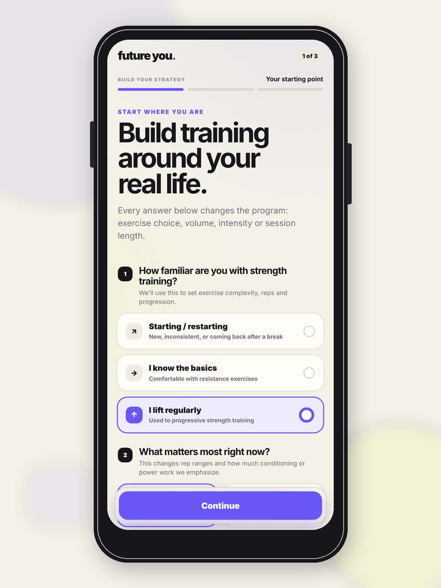

01 · START WHERE YOU ARE
Personalisation starts with constraints, not a personality quiz.
The onboarding asks the things that actually change the training prescription: how familiar you are with strength training, what matters most right now and the practical constraints around your week.
The point is not to collect a richer profile. It is to collect only enough information to make the next decision better.
